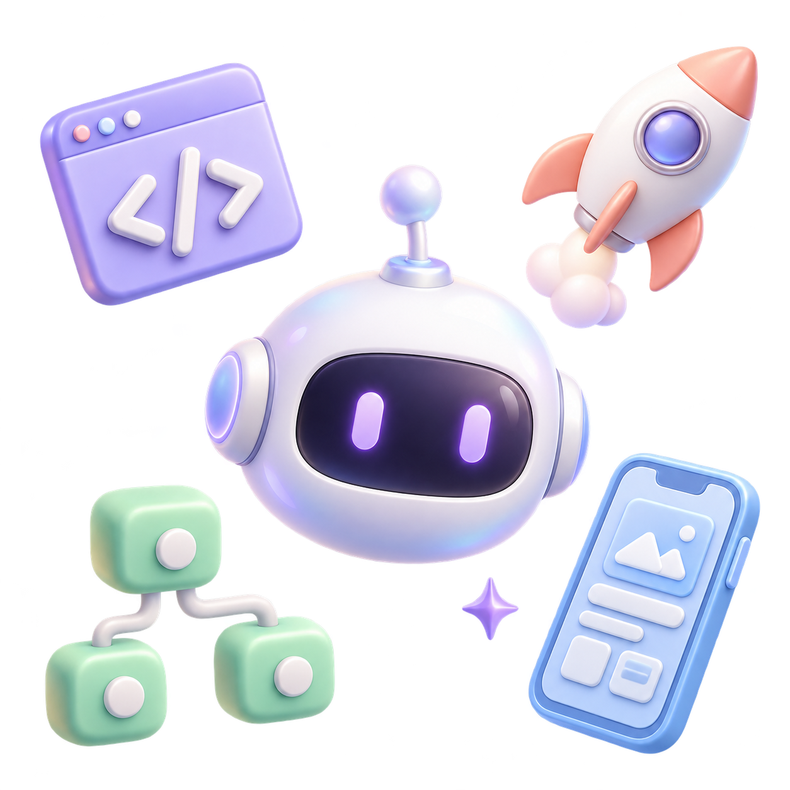
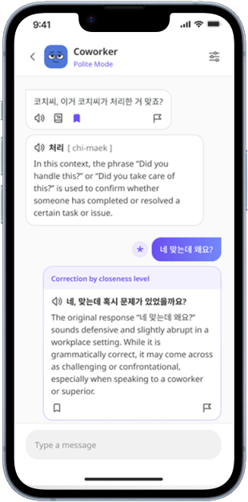
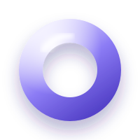

빠르게 만들고, 직접 검증합니다.
아이디어를 프로토타입으로 구현하고 직접 사용하며 가설을 검증합니다. 사용자 리서치와 설문, 경쟁사 분석으로 출발점을 정하고 피드백과 데이터로 완성도를 높입니다.
사용자 리서치 · 설문 설계 · 경쟁사 분석 · GA4

Vibe coding AI & possibilities Connect the dots리서치로 문제를 좁히고, 설계와 구현으로 답을 만듭니다.
출시 후에는 사용자의 행동을 보며 다음을 정합니다.
아이디어를 프로토타입으로 구현하고 직접 사용하며 가설을 검증합니다. 사용자 리서치와 설문, 경쟁사 분석으로 출발점을 정하고 피드백과 데이터로 완성도를 높입니다.
사용자 리서치 · 설문 설계 · 경쟁사 분석 · GA4
요구사항·정책·IA·플로우를 정리해 서비스 구조와 사용자 경험을 설계합니다. 기존 업무의 디지털 전환부터 AI를 활용한 새로운 경험까지 고민합니다.
Figma · IA · 유저플로우 · 프로토타이핑
자동화 도구와 AI 스킬을 직접 만들고 적용합니다. 반복되는 일을 줄이고 더 효율적으로 문제를 해결할 방법을 탐색하며, 바이브 코딩으로 서비스를 구현합니다.
AI 서비스 설계 · 자동화 · 바이브 코딩
서비스를 만들어가며 필요했던 기획 산출물을 프로젝트별로 정리했습니다.

여럿이 콘텐츠를 저장하고 탐색하는 그룹 콘텐츠 아카이빙 앱

한국 문화를 학습한 챗봇을 통해 대화하며 배우는 AI 한국어 회화 서비스


03 / VIBE CODING연애 고민을 나누고 OX 투표로 서로의 생각을 듣는 커뮤니티 앱
전체 프로젝트 3개
새로운 관점과 가능성을 나누는 대화를 기다립니다.
rsj01223@gmail.com · 010-3464-1539